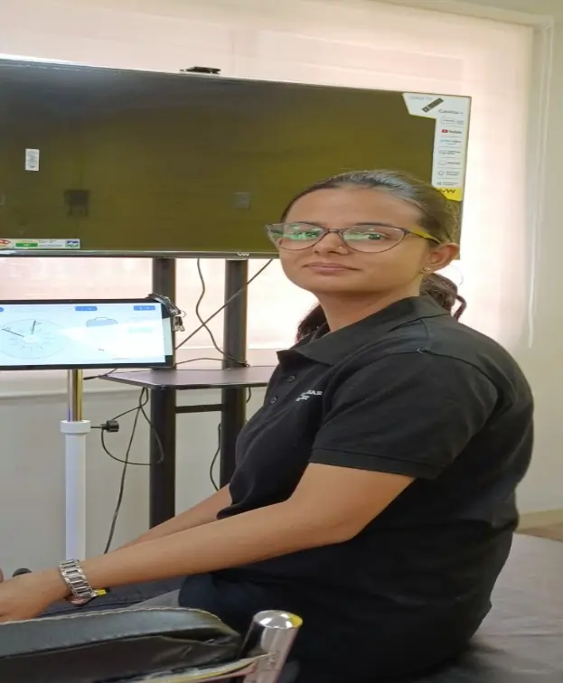

Expert Online Therapy & Virtual Rehabilitation Services

Expert Online Therapy & Virtual Rehabilitation Services
Bringing Our Specialized Care Directly To You, Wherever You Are

In today's fast-paced world, accessing high-quality healthcare shouldn't be limited by distance, travel, or time constraints. What if you could connect with our team of neuro-rehabilitation specialists from the comfort and convenience of your own home? Now, you can.
At Neuro Rehab, we are proud to offer a comprehensive suite of Online Therapy and Virtual Rehabilitation services. Using a secure, easy-to-use video platform, we bring our expert care directly to you, ensuring that your recovery journey continues without interruption. Whether you live far from our Pune center, have mobility challenges, or simply prefer the convenience of virtual care, our online programs provide a powerful and effective way to achieve your health goals.
Key Components of Our Online Therapy Platform
Our virtual services are designed to provide a complete and supportive rehabilitation experience.
- One-on-One Video Therapy Sessions: Live, interactive sessions with our expert Physiotherapists, occupational Physiotherapists, and speech Physiotherapists.
- Online Psychological Counseling:Confidential and supportive mental health therapy with our experienced psychologists.
- Online Nutrition Guidance:Personalized consultations with our centeral dietitians to support your health goals.
- Virtual Recovery Monitoring: A system for our Physiotherapists to track your progress and provide continuous feedback on your home exercise program.
- Initial Online ConsultationsA convenient way to get an expert assessment and care plan from one of our specialists.
What is Online Therapy (Telerehabilitation)?
Telerehabilitation is a modern approach that uses technology to deliver rehabilitation services remotely. It has become an essential part of healthcare, especially in India. The adoption of telehealth services in India has skyrocketed, with studies showing a growth of over 500% since the pandemic, proving it is a trusted and effective mode of care delivery.
Our online services are not a replacement for hands-on care when it's needed, but a powerful extension of it. It is ideal for:
- Providing expert guidance and prescribing home exercise programs.
- Monitoring your progress and ensuring you are performing exercises correctly.
- Providing counseling and education.
- Ensuring continuity of care when you cannot visit our Pune center in person.
Our Suite of Online Therapy Services
We offer our core specializations through our secure virtual platform.

Online Consultation
This is the perfect starting point. You can have a detailed initial assessment with one of our senior Physiotherapists—be it a physiotherapist, occupational therapist, or other specialist—to discuss your condition, set goals, and receive a preliminary diagnosis and treatment plan.
.webp)
Video Therapy Sessions
These are live, one-on-one therapy sessions conducted via video call, just like an in-center visit.
- Physiotherapy: Your therapist will visually assess your movement, demonstrate exercises, and provide real-time feedback on your form and technique.
- Occupational Therapy:Sessions can focus on discussing strategies for daily living, recommending assistive devices, or guiding you through functional movements in your own home environment.
- Speech & Swallow Therapy: Highly effective for aphasia, voice, and cognitive-communication therapy, as it allows for direct face-to-face interaction and targeted exercises.
.webp)
Online Psychological Counseling
Receive confidential, professional mental health support without leaving your home. This is an ideal format for individuals seeking privacy and comfort, and for caregivers who find it difficult to travel for appointments.
.webp)
Online Nutrition Guidance
Our centeral dietitians can conduct a full nutritional assessment and provide personalized meal planning and guidance through a detailed video consultation, helping you use nutrition to fuel your recovery. Nutrition Therapy Page
.webp)
Virtual Recovery Monitoring
This unique service provides a continuous connection to your therapist between live sessions.
- How it works: You can record yourself performing key exercises from your home program and securely share the videos with your therapist. They will review the videos and provide feedback on your technique, ensuring you are making progress safely and effectively. This is an excellent tool for ensuring your recovery stays on track.
Why Choose Apricot Rehab For Your Online Care?
At Apricot Rehab, you are in expert hands every step of the way. We are committed to building a relationship based on trust and transparency, guiding you toward not just immediate relief, but long-term wellness and a more fulfilling life.
Access to Our Specialists, Anywhere:
Our online platform gives you direct access to our team of highly specialized neurological and orthopedic Physiotherapists, regardless of your location.
A Seamless Hybrid Approach:
We believe in integrated care. Our online services can be used as a standalone option or blended seamlessly with in-center visits to our Pune center, creating a flexible "hybrid" care plan that fits your life.
Secure, Private, and Easy-to-Use:
We use a secure, HIPAA-compliant platform to protect your privacy. Our system is simple to use—if you can make a video call, you can do online therapy.
A Focus on Education and Self-Management:
Virtual care is an incredibly powerful tool for empowering you. We teach you the skills and provide the knowledge you need to become an active and confident manager of your own recovery.